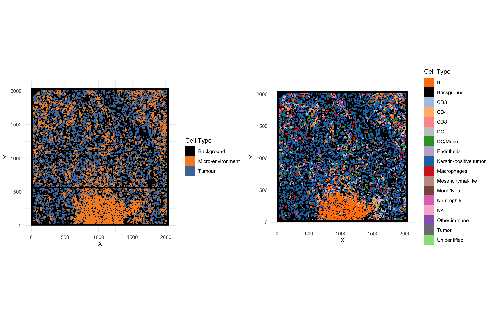
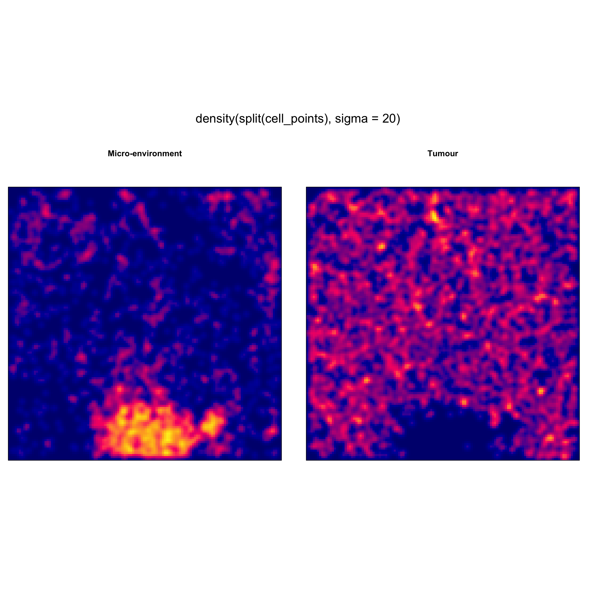
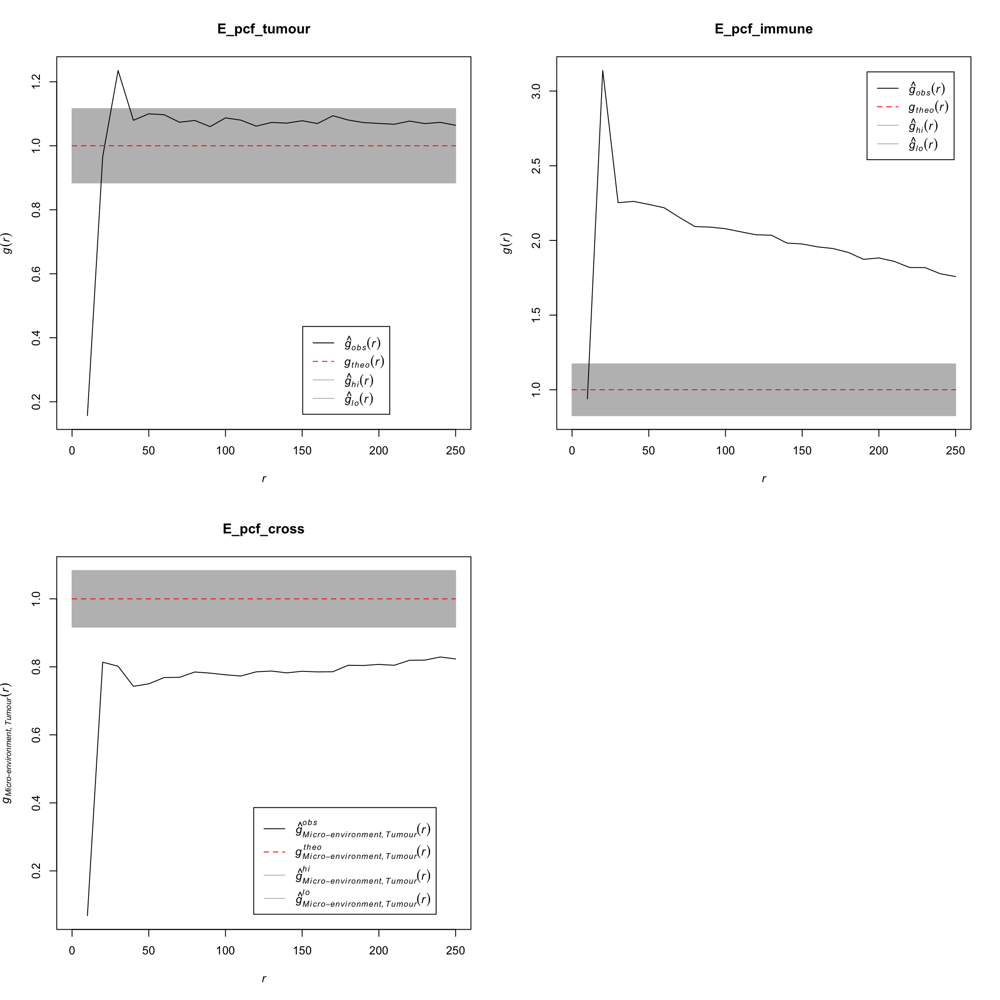
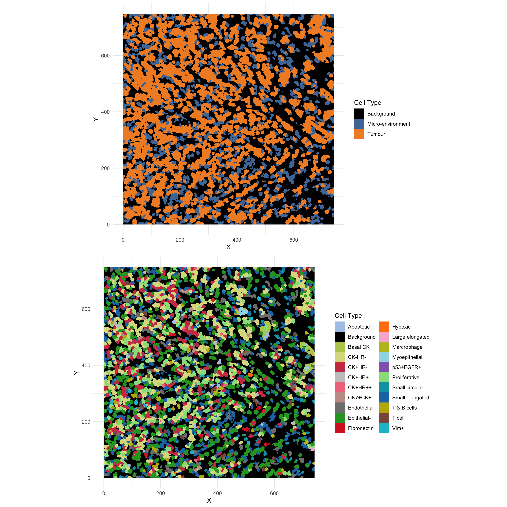
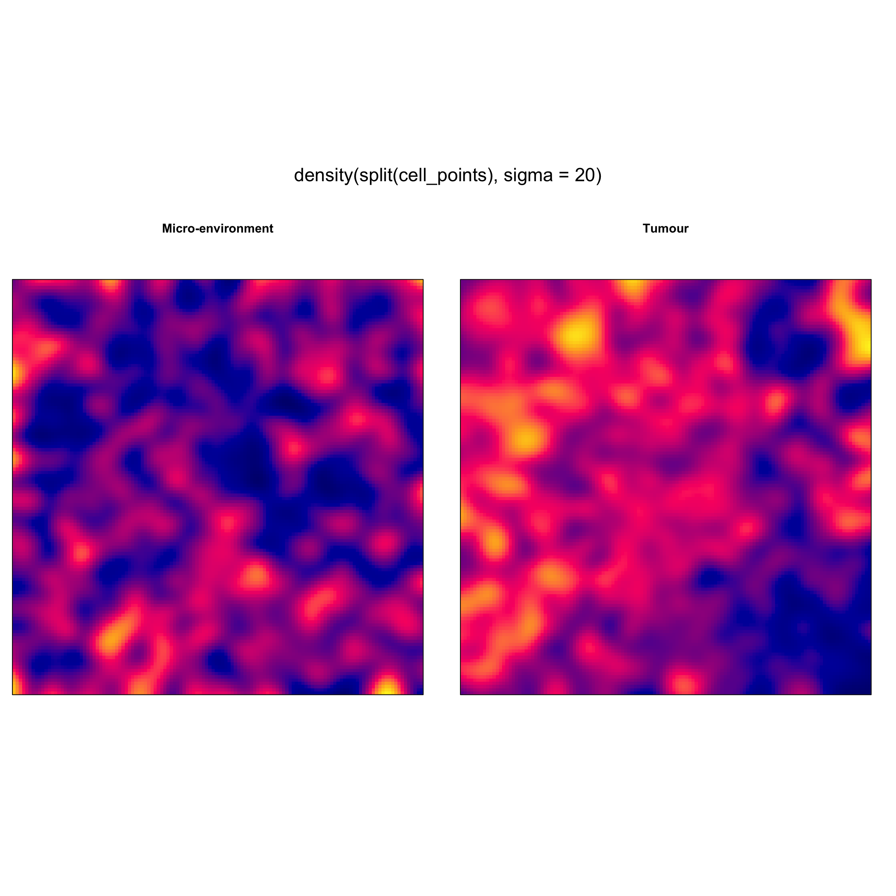
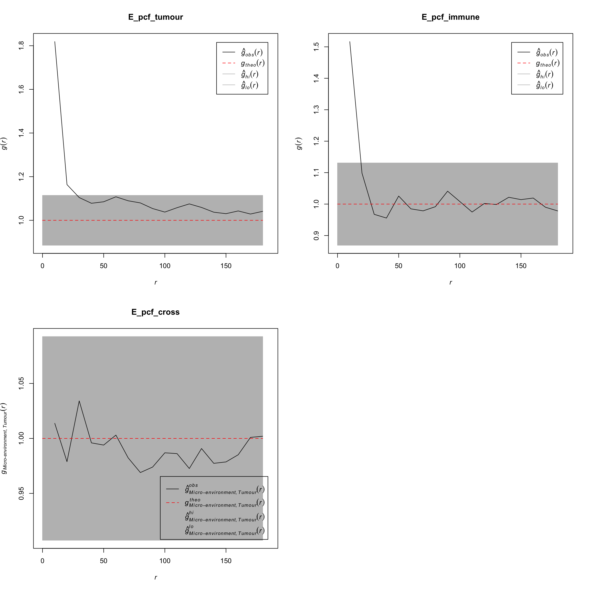
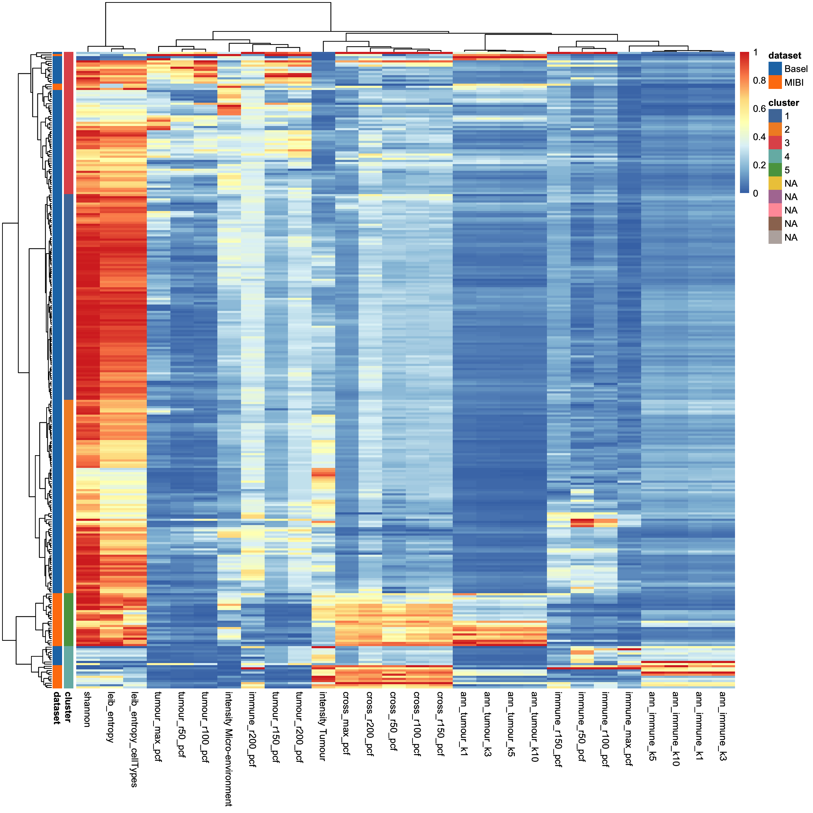
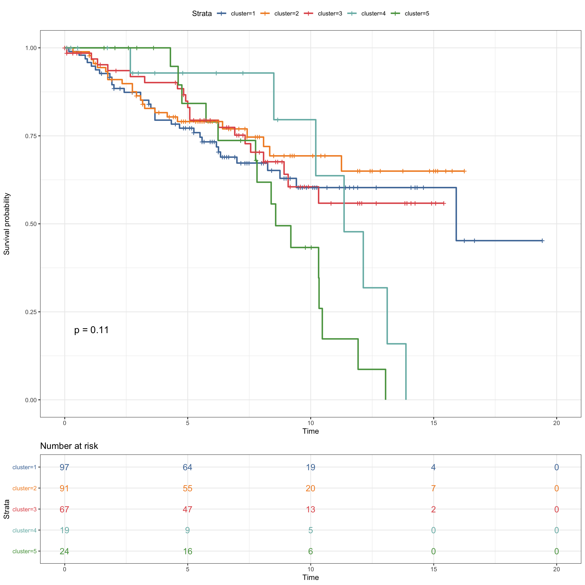
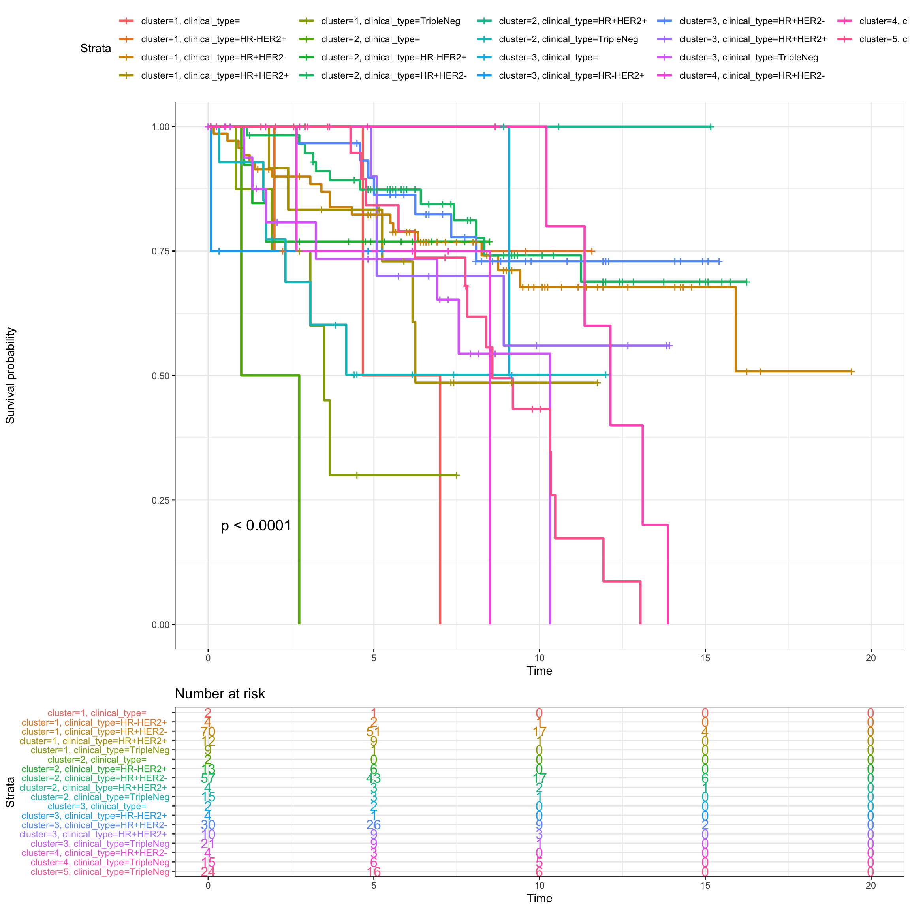
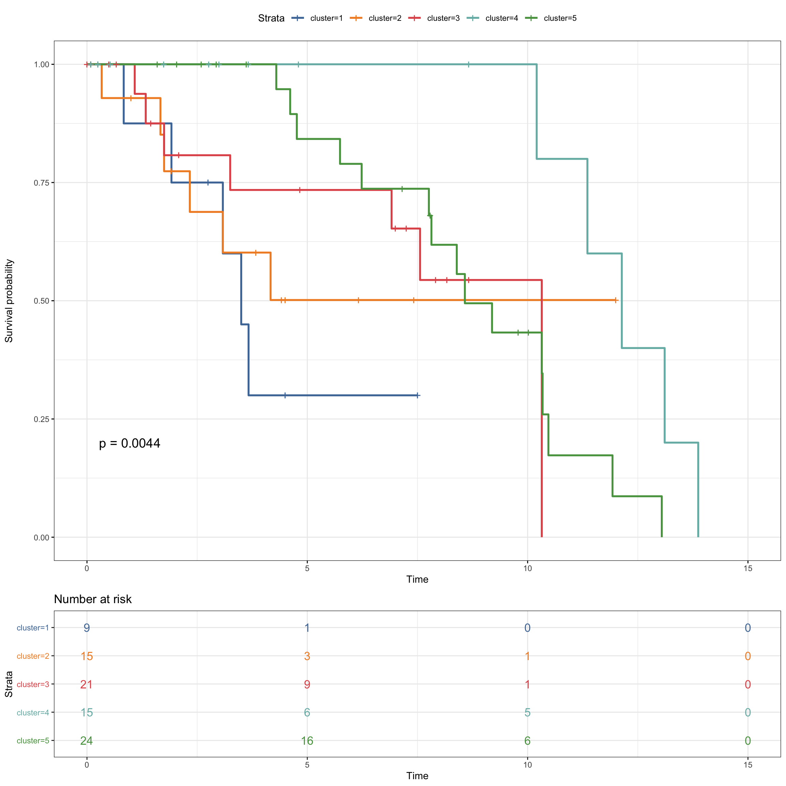

Preliminary Analysis
Data
library(scater)
library(SingleCellExperiment)
library(ggthemes)
library(ggplot2)
library(ggridges)
library(plyr)
library(raster)
library(gridExtra)
library(sp)
library(spatstat)
library(uwot)
library(pheatmap)
source("functions/image_analysis_function.R")
set.seed(2020)Keren et al.
load("../../sc-targeted-proteomics/data/mibiSCE.rda")
mibi.sce## class: SingleCellExperiment
## dim: 49 201656
## metadata(0):
## assays(1): mibi_exprs
## rownames(49): C Na ... Ta Au
## rowData names(4): channel_name is_protein hgnc_symbol wagner_overlap
## colnames: NULL
## colData names(36): SampleID cellLabelInImage ...
## Survival_days_capped_2016.1.1 Censored
## reducedDimNames(0):
## spikeNames(0):
## altExpNames(0):cat("Patients information")## Patients informationtable(mibi.sce$SampleID)##
## 1 2 3 4 5 6 7 8 9 10 11 12 13 14 15
## 5167 3028 6315 6643 5406 5998 3410 3136 6139 4580 5112 6995 7665 6270 3315
## 16 17 18 19 20 21 22 23 24 25 26 27 28 29 31
## 8212 7071 5539 4400 5103 5423 3072 4490 4613 2658 5119 4332 6061 4819 3415
## 32 33 34 35 36 37 38 39 40 41 42 43 44
## 5158 2046 2856 7716 2939 6280 4330 4030 4285 4532 1380 1381 1217cat("Cell types informaton")## Cell types informaton# table(mibi.sce$tumor_group)
# table(mibi.sce$immune_group)
# rename the cell types
mibi.sce$cellTypes <- ifelse(as.character(mibi.sce$immune_group) != "not immune",
as.character(mibi.sce$immune_group),
as.character(mibi.sce$tumor_group))
table(mibi.sce$cellTypes)##
## B CD3 CD4
## 9134 3867 12443
## CD8 DC DC/Mono
## 15787 1275 5052
## Endothelial Keratin-positive tumor Macrophages
## 2089 102736 20687
## Mesenchymal-like Mono/Neu Neutrophils
## 8479 3113 3020
## NK Other immune Tregs
## 674 6943 1341
## Tumor Unidentified
## 3177 1839mibi.sce$cellTypes_group <- ifelse(as.character(mibi.sce$immune_group) != "not immune",
"Micro-environment",
"Tumour")
selected_chanel_mibi <- rownames(mibi.sce)[rowData(mibi.sce)$is_protein == 1]# color for mibi cell types
cellTypes_group_mibi_color <- tableau_color_pal("Tableau 10")(length(unique(mibi.sce$cellTypes_group)))
cellTypes_group_mibi_color <- c(cellTypes_group_mibi_color, "black")
names(cellTypes_group_mibi_color) <- c(unique(mibi.sce$cellTypes_group), "Background")
cellTypes_mibi_color <- tableau_color_pal("Classic 20")(length(unique(mibi.sce$cellTypes)))
cellTypes_mibi_color <- c(cellTypes_mibi_color, "black")
names(cellTypes_mibi_color) <- c(unique(mibi.sce$cellTypes), "Background")Visualising all cells using UMAP
## Dimension Reduction using UMAP
mibi.sce <- runUMAP(mibi.sce, exprs_values = "mibi_exprs",
feature_set = selected_chanel_mibi)
g1 <- plotUMAP(mibi.sce, colour_by = "cellTypes") +
theme(aspect.ratio = 1)
g2 <- plotUMAP(mibi.sce, colour_by = "cellTypes_group") +
theme(aspect.ratio = 1)
g3 <- plotUMAP(mibi.sce, colour_by = "SampleID") +
theme(aspect.ratio = 1)
grid.arrange(g1, g2, g3, ncol = 2)
Cell type composition
df_mibi <- data.frame(colData(mibi.sce))
g1 <- ggplot(df_mibi, aes(x = SampleID, fill = cellTypes)) +
geom_bar() +
theme_bw() +
scale_fill_manual(values = cellTypes_mibi_color) +
theme(legend.position = "right")
g2 <- ggplot(df_mibi, aes(x = SampleID, fill = cellTypes_group)) +
geom_bar() +
theme_bw() +
scale_fill_manual(values = cellTypes_group_mibi_color) +
theme(legend.position = "right")
grid.arrange(g1, g2, ncol = 2)
Jackson et al.
source("basel_preprocessing.R")sc_mat <- readRDS("../../sc-targeted-proteomics/output/basel_sc_mat.rds")
pg <- readRDS("../../sc-targeted-proteomics/output/basel_pg.rds")
meta <- readRDS("../../sc-targeted-proteomics/output/basel_meta.rds")
selected_chanel <- readRDS("../../sc-targeted-proteomics/output/basel_selected_chanel.rds")
dim(sc_mat)## [1] 844498 64sc_mat_norm <- apply(sc_mat, 2, scale)umap <- uwot::umap(sc_mat_norm[, selected_chanel])
saveRDS(umap, file = "../../sc-targeted-proteomics/output/basel_umap.rds")# color for mibi cell types
cellTypes_basel_color <- sort(c(tableau_color_pal("Classic 20")(20),
tableau_color_pal("Summer")(5)))
cellTypes_basel_color <- c(cellTypes_basel_color, "black")
names(cellTypes_basel_color) <- c(unique(pg$cluster_name), "Background")Visualising all cells using UMAP
basel_umap <- readRDS("../../sc-targeted-proteomics/output/basel_umap.rds")
library(scattermore)
pg$UMAP1 <- basel_umap[, 1]
pg$UMAP2 <- basel_umap[, 2]
g1 <- ggplot(pg, aes(x = UMAP1, y = UMAP2, color = cluster_name)) +
geom_scattermore() +
theme_bw() +
theme(aspect.ratio = 1) +
scale_color_manual(values = cellTypes_basel_color) +
labs(color = "Cell Type")
g1
g2 <- ggplot(pg, aes(x = UMAP1, y = UMAP2, color = cluster_type)) +
geom_scattermore() +
theme_bw() +
theme(aspect.ratio = 1) +
scale_color_tableau() +
labs(color = "Cell Type")
g2
Cell type composition
df_basel <- data.frame(pg)
g1 <- ggplot(df_basel, aes(x = core, fill = cluster_name)) +
geom_bar() +
theme_bw() +
scale_fill_manual(values = cellTypes_basel_color) +
theme(legend.position = "right",
axis.text.x = element_blank())
g1
g2 <- ggplot(df_basel, aes(x = core, fill = cluster_type)) +
geom_bar() +
theme_bw() +
scale_fill_tableau() +
theme(legend.position = "right",
axis.text.x = element_blank())
g2
Overlapped features between two datasets
# intersect(colnames(sc_mat), rownames(mibi.sce))
# colnames(sc_mat)[!colnames(sc_mat) %in% rownames(mibi.sce)]
rownames(mibi.sce)[!rownames(mibi.sce) %in% colnames(sc_mat)]## [1] "C" "Na" "Si" "P"
## [5] "Ca" "Fe" "dsDNA" "Background"
## [9] "B7H3" "FoxP3" "Lag3" "CD4"
## [13] "CD16" "CD56" "OX40" "PD1"
## [17] "CD31" "PD-L1" "CD209" "CD11c"
## [21] "CD138" "CD163" "CSF-1R" "CD8"
## [25] "IDO" "Keratin17" "CD63" "CD45RO"
## [29] "Beta catenin" "HLA-DR" "CD11b" "H3K9ac"
## [33] "Pan-Keratin" "phospho-S6" "MPO" "Keratin6"
## [37] "HLA_Class_1" "Ta" "Au"rownames(mibi.sce)[rownames(mibi.sce) == "phospho-S6"] <- "pS6"
rownames(mibi.sce)[rownames(mibi.sce) == "CD31"] <- "vWF"
rownames(mibi.sce)[rownames(mibi.sce) == "Pan-Keratin"] <- "panCK"
common_anti <- intersect(colnames(sc_mat), rownames(mibi.sce))
cat("Common protein between two datasets")## Common protein between two datasetscommon_anti## [1] "EGFR" "Ki67" "SMA" "Vimentin" "p53" "panCK"
## [7] "CD20" "vWF" "H3K27me3" "CD45" "CD68" "CD3"
## [13] "pS6"length(common_anti) ## [1] 13mibi_exprs <- assay(mibi.sce, "mibi_exprs")
mibi_exprs_common <- mibi_exprs[common_anti, ]
sc_mat_common <- t(sc_mat_norm[, common_anti])umap_common <- uwot::umap(t(sc_mat_common))
saveRDS(umap_common, file = "../../sc-targeted-proteomics/output/basel_umap_common.rds")
umap_mibi_common <- uwot::umap(t(mibi_exprs_common))
saveRDS(umap_mibi_common, file = "../../sc-targeted-proteomics/output/mibi_umap_common.rds")basel_umap_common <- readRDS("../../sc-targeted-proteomics/output/basel_umap_common.rds")
pg$UMAP1_common <- basel_umap_common[, 1]
pg$UMAP2_common <- basel_umap_common[, 2]
g1 <- ggplot(pg, aes(x = UMAP1_common, y = UMAP2_common, color = cluster_name)) +
geom_scattermore() +
theme_bw() +
theme(aspect.ratio = 1) +
scale_color_manual(values = cellTypes_basel_color) +
labs(color = "Cell Type")
g1
g2 <- ggplot(pg, aes(x = UMAP1_common, y = UMAP2_common, color = cluster_type)) +
geom_scattermore() +
theme_bw() +
theme(aspect.ratio = 1) +
scale_color_tableau() +
labs(color = "Cell Type")
g2
mibi_umap_common <- readRDS("../../sc-targeted-proteomics/output/mibi_umap_common.rds")
df_mibi$UMAP1_common <- mibi_umap_common[, 1]
df_mibi$UMAP2_common <- mibi_umap_common[, 2]
g1 <- ggplot(df_mibi, aes(x = UMAP1_common, y = UMAP2_common, color = cellTypes)) +
geom_scattermore() +
theme_bw() +
theme(aspect.ratio = 1) +
scale_color_manual(values = cellTypes_mibi_color) +
labs(color = "Cell Type")
g1
g2 <- ggplot(df_mibi, aes(x = UMAP1_common, y = UMAP2_common, color = cellTypes_group)) +
geom_scattermore() +
theme_bw() +
theme(aspect.ratio = 1) +
scale_color_tableau() +
labs(color = "Cell Type")
g2
Spatial Pattern Analysis
Here we will use two images from Keren et al. and Jackson et al. as examples to show the image extraction procedure (The full image extraction codes are provided in mibi_spatial_analysis.R and basel_spatial_analysis.R).
Keren et al.
tiff_name_list <- list.files("../../sc-targeted-proteomics/data/TNBC_shareCellData/", pattern = ".tiff")
tiff_name_list <- tiff_name_list[-24] #filter p30
tiff_name_list## [1] "p1_labeledcellData.tiff" "p10_labeledcellData.tiff"
## [3] "p11_labeledcellData.tiff" "p12_labeledcellData.tiff"
## [5] "p13_labeledcellData.tiff" "p14_labeledcellData.tiff"
## [7] "p15_labeledcellData.tiff" "p16_labeledcellData.tiff"
## [9] "p17_labeledcellData.tiff" "p18_labeledcellData.tiff"
## [11] "p19_labeledcellData.tiff" "p2_labeledcellData.tiff"
## [13] "p20_labeledcellData.tiff" "p21_labeledcellData.tiff"
## [15] "p22_labeledcellData.tiff" "p23_labeledcellData.tiff"
## [17] "p24_labeledcellData.tiff" "p25_labeledcellData.tiff"
## [19] "p26_labeledcellData.tiff" "p27_labeledcellData.tiff"
## [21] "p28_labeledcellData.tiff" "p29_labeledcellData.tiff"
## [23] "p3_labeledcellData.tiff" "p31_labeledcellData.tiff"
## [25] "p32_labeledcellData.tiff" "p33_labeledcellData.tiff"
## [27] "p34_labeledcellData.tiff" "p35_labeledcellData.tiff"
## [29] "p36_labeledcellData.tiff" "p37_labeledcellData.tiff"
## [31] "p38_labeledcellData.tiff" "p39_labeledcellData.tiff"
## [33] "p4_labeledcellData.tiff" "p40_labeledcellData.tiff"
## [35] "p41_labeledcellData.tiff" "p5_labeledcellData.tiff"
## [37] "p6_labeledcellData.tiff" "p7_labeledcellData.tiff"
## [39] "p8_labeledcellData.tiff" "p9_labeledcellData.tiff"Here we are extracting the spatial pattern features from p1_labeledcellData.tiff.
s <- 1
str_name <- paste("../../sc-targeted-proteomics/data/TNBC_shareCellData/", tiff_name_list[s], sep = "")
sample_id <- as.numeric(gsub("p", "", gsub("_labeledcellData.tiff", "", tiff_name_list[s])))
cat(paste0("Reading the tiff ", print(tiff_name_list[s])))## [1] "p1_labeledcellData.tiff"
## Reading the tiff p1_labeledcellData.tiff# read tiff data using raster
r <- raster(str_name)
r## class : RasterLayer
## dimensions : 2048, 2048, 4194304 (nrow, ncol, ncell)
## resolution : 1, 1 (x, y)
## extent : 0, 2048, 0, 2048 (xmin, xmax, ymin, ymax)
## crs : NA
## source : /Users/yingxinlin/Dropbox (Sydney Uni)/PhDProj/BANFF2020/sc-targeted-proteomics/data/TNBC_shareCellData/p1_labeledcellData.tiff
## names : p1_labeledcellData
## values : 0, 65535 (min, max)p_sce <- mibi.sce[, mibi.sce$SampleID == sample_id]
# matching the cell label in SingleCellExperiment with the raster position
cell_label <- raster::values(r)
all_group_info <- p_sce$cellTypes_group
notInLabel <- unique(cell_label[!cell_label %in% p_sce$cellLabelInImage])
new_values <- mapvalues((cell_label), from = notInLabel, to = rep("Background",
length(notInLabel)))
new_values <- mapvalues((new_values), from = p_sce$cellLabelInImage, to = all_group_info)
new_values_cellTypes <- mapvalues((cell_label), from = notInLabel, to = rep("Background",
length(notInLabel)))
new_values_cellTypes <- mapvalues((new_values_cellTypes), from = p_sce$cellLabelInImage, to = p_sce$cellTypes)ddf <- rasterToPoints(r)
ddf <- data.frame(ddf)
colnames(ddf) <- c("X", "Y", "value")
ddf$cellType_group <- new_values
ddf$cellType <- new_values_cellTypes
g_cellGroup <- ggplot(NULL) +
geom_raster(data = ddf, aes(X, Y, fill = as.factor(cellType_group))) +
theme_minimal() +
scale_fill_manual(values = cellTypes_group_mibi_color) +
coord_quickmap() +
theme(aspect.ratio = 1, legend.position = "right") +
labs(fill = "Cell Type")
g_cellTypes <- ggplot(NULL) +
geom_raster(data = ddf, aes(X, Y, fill = as.factor(cellType))) +
theme_minimal() +
scale_fill_manual(values = cellTypes_mibi_color) +
coord_quickmap() +
theme(aspect.ratio = 1, legend.position = "right") +
labs(fill = "Cell Type")
grid.arrange(g_cellGroup, g_cellTypes, ncol = 2)
# extract the location and identify the cell centroid
coord_r <- rasterToPoints(r)
center_r_x <- aggregate(coord_r[, 1], list(coord_r[, 3]), median)
group <- center_r_x$Group.1
center_r_x <- center_r_x$x
center_r_y <- aggregate(coord_r[, 2], list(coord_r[, 3]), median)$x
center_r <- data.frame(x = center_r_x, y = center_r_y, group = group)
## maping the cell types to the raster
r_cellType_group <- mapvalues((center_r$group), from = notInLabel, to = rep(0, length(notInLabel)))
r_cellType_group <- mapvalues((r_cellType_group), from = p_sce$cellLabelInImage, to = all_group_info)
center_r$cellTypes <- r_cellType_group
r_cellType <- mapvalues((center_r$group), from = notInLabel, to = rep(0, length(notInLabel)))
r_cellType <- mapvalues((r_cellType), from = p_sce$cellLabelInImage, to = p_sce$cellTypes)
center_r$cellTypes2 <- r_cellType
# filter the center info without cells
center_r <- center_r[center_r$cellTypes != "0", ]
r_cellType_group <- mapvalues((center_r$group),
from = notInLabel,
to = rep(0, length(notInLabel)))
exprsMat <- assay(p_sce, "mibi_exprs")
exprsMat_map <- sapply(rownames(exprsMat), function(x) {
zero_one_scale(mapvalues((r_cellType_group),
from = p_sce$cellLabelInImage,
to = exprsMat[x, ]))
})# create ppp object and extract spatial features
cell_points <- ppp(x = center_r[, 1], y = center_r[, 2], check = FALSE,
yrange = c(0, 2048), xrange = c(0, 2048),
marks = as.factor(center_r$cellTypes))
plot(density(split(cell_points), sigma = 20), ribbon = FALSE)
idx <- center_r$cellTypes == "Tumour"
cell_points_tumour <- ppp(x = center_r[idx, 1], y = center_r[idx, 2], check = FALSE,
yrange = c(0, 2048), xrange = c(0, 2048))
idx <- center_r$cellTypes == "Micro-environment"
cell_points_immune <- ppp(x = center_r[idx, 1], y = center_r[idx, 2], check = FALSE,
yrange = c(0, 2048), xrange = c(0, 2048))
ann_tumour_k1 <- mean(nndist(cell_points_tumour, k = 1))
ann_tumour_k3 <- mean(nndist(cell_points_tumour, k = 3))
ann_tumour_k5 <- mean(nndist(cell_points_tumour, k = 5))
ann_tumour_k10 <- mean(nndist(cell_points_tumour, k = 10))
ann_immune_k1 <- mean(nndist(cell_points_immune, k = 1))
ann_immune_k3 <- mean(nndist(cell_points_immune, k = 3))
ann_immune_k5 <- mean(nndist(cell_points_immune, k = 5))
ann_immune_k10 <- mean(nndist(cell_points_immune, k = 10))
E_pcf_cross <- envelope(cell_points, pcfcross, nsim = 100,
correction = "Ripley", savefuns = T,
global = TRUE,
r = seq(0,250, 10))## Generating 100 simulations of CSR ...
## 1, 2, 3, 4, 5, 6, 7, 8, 9, 10, 11, 12, 13, 14, 15, 16, 17, 18, 19, 20, 21, 22, 23, 24, 25, 26, 27, 28, 29, 30, 31, 32, 33, 34, 35, 36, 37, 38, 39,
## 40, 41, 42, 43, 44, 45, 46, 47, 48, 49, 50, 51, 52, 53, 54, 55, 56, 57, 58, 59, 60, 61, 62, 63, 64, 65, 66, 67, 68, 69, 70, 71, 72, 73, 74, 75, 76, 77, 78,
## 79, 80, 81, 82, 83, 84, 85, 86, 87, 88, 89, 90, 91, 92, 93, 94, 95, 96, 97, 98, 99, 100.
##
## Done.E_pcf_tumour <- envelope(cell_points[cell_points$marks == 'Tumour'], pcf, nsim = 100,
correction = "Ripley", savefuns = T,
global = TRUE,
r = seq(0,250, 10))## Generating 100 simulations of CSR ...
## 1, 2, 3, 4, 5, 6, 7, 8, 9, 10, 11, 12, 13, 14, 15, 16, 17, 18, 19, 20, 21, 22, 23, 24, 25, 26, 27, 28, 29, 30, 31, 32, 33, 34, 35, 36, 37, 38, 39,
## 40, 41, 42, 43, 44, 45, 46, 47, 48, 49, 50, 51, 52, 53, 54, 55, 56, 57, 58, 59, 60, 61, 62, 63, 64, 65, 66, 67, 68, 69, 70, 71, 72, 73, 74, 75, 76, 77, 78,
## 79, 80, 81, 82, 83, 84, 85, 86, 87, 88, 89, 90, 91, 92, 93, 94, 95, 96, 97, 98, 99, 100.
##
## Done.E_pcf_immune <- envelope(cell_points[cell_points$marks == "Micro-environment"], pcf, nsim = 100,
correction = "Ripley", savefuns = T,
global = TRUE,
r = seq(0,250, 10))## Generating 100 simulations of CSR ...
## 1, 2, 3, 4, 5, 6, 7, 8, 9, 10, 11, 12, 13, 14, 15, 16, 17, 18, 19, 20, 21, 22, 23, 24, 25, 26, 27, 28, 29, 30, 31, 32, 33, 34, 35, 36, 37, 38, 39,
## 40, 41, 42, 43, 44, 45, 46, 47, 48, 49, 50, 51, 52, 53, 54, 55, 56, 57, 58, 59, 60, 61, 62, 63, 64, 65, 66, 67, 68, 69, 70, 71, 72, 73, 74, 75, 76, 77, 78,
## 79, 80, 81, 82, 83, 84, 85, 86, 87, 88, 89, 90, 91, 92, 93, 94, 95, 96, 97, 98, 99, 100.
##
## Done.Patial correlation function for tumour-tumour cells, immune-immune cells and tumour-immune cells
par(mfrow = c(2, 2))
plot(E_pcf_tumour)
plot(E_pcf_immune)
plot(E_pcf_cross)
The above plot indicates the pairwise correlation function (pcf) of distance for point patterns in terms of (i) tumour cells, (ii) immune cells, (iii) tumour-immune cells. The grey area here indicates a null distribution generated by permutations. For a certain radius r and the point from the same cell type, a pcf value higher than upper critical boundary of the gray area are indicates that the points are significantly distributed in clusters, while than the lower boundary of the grey area indicates the dispersed distribution of the points. For the values that are within the grey area, it indicates the points are spatially randomlly distributed. On the other hand, when we comparing the points from two different types, a larger pcf values indicates the two types of points are attracted, and a lower pcf values indicate the points are repulsed.
We can see for this sample, Tumour cells are more likely randomly distributed in spatial context, while immune cells are located as clusters. And the tumour and immune cells are repulsed to each other.
pcf_results <- c(extract_pcf_results(E_pcf_cross, "cross"),
extract_pcf_results(E_pcf_tumour, "tumour"),
extract_pcf_results(E_pcf_immune, "immune"))
library(SpatEntropy)
shZ <- shannonX(marks(cell_points))## [1] "data must be a matrix or a vector"#Leibovici’s entropy
dmat <- pairdist(cell_points)
dmat[lower.tri(dmat,diag = TRUE)] <- NA
adjmat <- adj_mat(dmat, dd0 = 0, dd1 = 20)
leib <- leibovici(marks(cell_points), adjmat, ordered = TRUE)
leib_freq <- leib$freq.table$proportion
names(leib_freq) <- paste("leib", leib$freq.table$couple, "freq", sep = "_")
leib_entro <- leib$entropy
names(leib_entro) <- "leib_entropy"
intensity_res <- intensity(cell_points)
names(intensity_res) <- paste("intensity", names(intensity_res))
marks(cell_points) <- center_r$cellTypes2
#Leibovici’s entropy
dmat <- pairdist(cell_points)
dmat[lower.tri(dmat,diag = TRUE)] <- NA
adjmat <- adj_mat(dmat, dd0 = 0, dd1 = 20)
leib <- leibovici(marks(cell_points), adjmat, ordered = TRUE)
leib_entro2 <- leib$entropy
names(leib_entro2) <- "leib_entropy_cellTypes"
res_image <- c(intensity_res, shannon = shZ$shannon, leib_entro, leib_entro2,
pcf_results,
ann_tumour_k1 = ann_tumour_k1, ann_tumour_k3 = ann_tumour_k3,
ann_tumour_k5 = ann_tumour_k5, ann_tumour_k10 = ann_tumour_k10,
ann_immune_k1 = ann_immune_k1, ann_immune_k3 = ann_immune_k3,
ann_immune_k5 = ann_immune_k5, ann_immune_k10 = ann_immune_k10)
cat(paste0("Features extracted for", tiff_name_list[s]))## Features extracted forp1_labeledcellData.tiffround(res_image, 2)## intensity Micro-environment intensity Tumour
## 0.00 0.00
## shannon leib_entropy
## 0.69 1.00
## leib_entropy_cellTypes cross_max_pcf
## 3.11 0.83
## cross_max_r cross_max_sig
## 240.00 -1.00
## cross_r50_pcf cross_r50_pcf_sig
## 0.75 -1.00
## cross_r100_pcf cross_r100_pcf_sig
## 0.78 -1.00
## cross_r150_pcf cross_r150_pcf_sig
## 0.79 -1.00
## cross_r200_pcf cross_r200_pcf_sig
## 0.81 -1.00
## tumour_max_pcf tumour_max_r
## 1.24 30.00
## tumour_max_sig tumour_r50_pcf
## 1.00 1.10
## tumour_r50_pcf_sig tumour_r100_pcf
## 0.00 1.09
## tumour_r100_pcf_sig tumour_r150_pcf
## 0.00 1.08
## tumour_r150_pcf_sig tumour_r200_pcf
## 0.00 1.07
## tumour_r200_pcf_sig immune_max_pcf
## 0.00 3.14
## immune_max_r immune_max_sig
## 20.00 1.00
## immune_r50_pcf immune_r50_pcf_sig
## 2.24 1.00
## immune_r100_pcf immune_r100_pcf_sig
## 2.08 1.00
## immune_r150_pcf immune_r150_pcf_sig
## 1.98 1.00
## immune_r200_pcf immune_r200_pcf_sig
## 1.88 1.00
## ann_tumour_k1 ann_tumour_k3
## 25.00 38.05
## ann_tumour_k5 ann_tumour_k10
## 49.00 69.67
## ann_immune_k1 ann_immune_k3
## 20.25 32.76
## ann_immune_k5 ann_immune_k10
## 43.27 62.85Jackson et al.
The similar analysis for Jackson et al. Basel cohort
pg$cluster_type2 <- pg$cluster_type
pg$cluster_type2[pg$cluster_type2 %in% c("Endothelial", "Stromal", "Immune")] <- "Micro-environment"
pg$cluster_type2[pg$cluster_type2 %in% c("Epithelial")] <- "Tumour"
table(pg$cluster_type2)##
## Micro-environment Tumour
## 401634 442864cellTypes_group_basel_color <- tableau_color_pal("Tableau 10")(length(unique(pg$cluster_type2)))
cellTypes_group_basel_color <- c(cellTypes_group_basel_color, "black")
names(cellTypes_group_basel_color) <- c(unique(pg$cluster_type2), "Background")tiff_name_list <- list.files("../../sc-targeted-proteomics/data/Nature_cytof/OMEnMasks/Basel_Zuri_masks/", pattern = "Basel")
map_names <- readRDS("../../sc-targeted-proteomics/output/basel_map_file_core_names.rds")
filter_idx <- c(93, 106, 107, 238, 251, 370, 371)
tiff_name_list <- tiff_name_list[-filter_idx]
s <- 333
str_name <- paste("../../sc-targeted-proteomics/data/Nature_cytof/OMEnMasks/Basel_Zuri_masks/",
tiff_name_list[s], sep = "")
r <- raster(str_name)
cell_label <- raster::values(r)
ncells <- length(unique(cell_label)) - 1
sample_id <- names(which(map_names[, 2] == tiff_name_list[s]))
idx <- which(pg$core == sample_id)
pg_sub <- pg[idx, ]
sc_mat_subset <- sc_mat[idx, ]all_group_info <- pg_sub$cluster_type2
cell_label <- mapvalues(cell_label,
from = sort(unique(cell_label[cell_label != 0])),
to = seq_len(length(unique(cell_label[cell_label != 0]))))
values(r) <- cell_label
new_values <- mapvalues(cell_label, from = 0, to = "Background")
new_values <- mapvalues(new_values, from = seq_len(length(unique(cell_label[cell_label != 0]))), to = all_group_info)
ddf <- rasterToPoints(r)
ddf <- data.frame(ddf)
colnames(ddf) <- c("X", "Y", "value")
ddf$cellType <- new_values
g_cellTypes <- ggplot(NULL) +
geom_raster(data = ddf, aes(X, Y, fill = as.factor(cellType))) +
theme_minimal() +
scale_fill_manual(values = cellTypes_group_basel_color) +
coord_quickmap() +
theme(aspect.ratio = 1) +
labs(fill = "Cell Type")
new_values2 <- mapvalues(cell_label, from = 0, to = "Background")
new_values2 <- mapvalues(new_values2, from = seq_len(length(unique(cell_label[cell_label != 0]))), to = pg_sub$cluster_name)
ddf$cellType2 <- new_values2
g_cellTypes2 <- ggplot(NULL) +
geom_raster(data = ddf, aes(X, Y, fill = as.factor(cellType2))) +
theme_minimal() +
scale_fill_manual(values = cellTypes_basel_color) +
coord_quickmap() +
theme(aspect.ratio = 1) +
labs(fill = "Cell Type")
grid.arrange(g_cellTypes, g_cellTypes2, nrow = 2)
coord_r <- rasterToPoints(r)
center_r_x <- aggregate(coord_r[, 1], list(coord_r[, 3]), median)
group <- center_r_x$Group.1
center_r_x <- center_r_x$x
center_r_y <- aggregate(coord_r[, 2], list(coord_r[, 3]), median)$x
center_r <- data.frame(x = center_r_x, y = center_r_y, group = group)
center_r <- center_r[center_r$group != 0, ]
center_r$cellTypes <- pg_sub$cluster_type2
center_r$cellTypes2 <- pg_sub$cluster_type
library(sf)
library(maptools)
cell_points <- ppp(x = center_r[, 1], y = center_r[, 2], check = FALSE,
yrange = c(0, round(max(coord_r[, 2]))),
xrange = c(0, round(max(coord_r[, 1]))),
marks = as.factor(center_r$cellTypes))
plot(density(split(cell_points), sigma = 20), ribbon = FALSE)
idx <- center_r$cellTypes == "Tumour"
cell_points_tumour <- ppp(x = center_r[idx, 1], y = center_r[idx, 2], check = FALSE,
yrange = c(0, round(max(coord_r[, 2]))),
xrange = c(0, round(max(coord_r[, 1]))))
idx <- center_r$cellTypes == "Micro-environment"
cell_points_immune <- ppp(x = center_r[idx, 1], y = center_r[idx, 2], check = FALSE,
yrange = c(0, round(max(coord_r[, 2]))),
xrange = c(0, round(max(coord_r[, 1]))))
ann_tumour_k1 <- mean(nndist(cell_points_tumour, k = 1))
ann_tumour_k3 <- mean(nndist(cell_points_tumour, k = 3))
ann_tumour_k5 <- mean(nndist(cell_points_tumour, k = 5))
ann_tumour_k10 <- mean(nndist(cell_points_tumour, k = 10))
ann_immune_k1 <- mean(nndist(cell_points_immune, k = 1))
ann_immune_k3 <- mean(nndist(cell_points_immune, k = 3))
ann_immune_k5 <- mean(nndist(cell_points_immune, k = 5))
ann_immune_k10 <- mean(nndist(cell_points_immune, k = 10))
E_pcf_cross <- envelope(cell_points, pcfcross, nsim = 100,
correction = "Ripley", savefuns = T,
global = TRUE,
r = seq(0,250, 10))## Generating 100 simulations of CSR ...
## 1, 2, 3, 4, 5, 6, 7, 8, 9, 10, 11, 12, 13, 14, 15, 16, 17, 18, 19, 20, 21, 22, 23, 24, 25, 26, 27, 28, 29, 30, 31, 32, 33, 34, 35, 36, 37, 38, 39,
## 40, 41, 42, 43, 44, 45, 46, 47, 48, 49, 50, 51, 52, 53, 54, 55, 56, 57, 58, 59, 60, 61, 62, 63, 64, 65, 66, 67, 68, 69, 70, 71, 72, 73, 74, 75, 76, 77, 78,
## 79, 80, 81, 82, 83, 84, 85, 86, 87, 88, 89, 90, 91, 92, 93, 94, 95, 96, 97, 98, 99, 100.
##
## Done.E_pcf_tumour <- envelope(cell_points[cell_points$marks=='Tumour'], pcf, nsim = 100,
correction = "Ripley", savefuns = T,
global = TRUE,
r = seq(0,250, 10))## Generating 100 simulations of CSR ...
## 1, 2, [etd 3:33] 3, [etd 3:18] 4,
## [etd 3:06] 5, [etd 3:13] 6, [etd 3:11] 7, [etd 3:01] 8,
## [etd 3:01] 9, [etd 2:54] 10, [etd 2:48] 11, [etd 2:52] 12,
## [etd 2:49] 13, [etd 2:46] 14, [etd 2:46] 15, [etd 2:43] 16,
## [etd 2:50] 17, [etd 2:45] 18, [etd 2:55] 19, [etd 2:52] 20,
## [etd 2:48] 21, [etd 2:43] 22, [etd 2:41] 23, [etd 2:37] 24,
## [etd 2:34] 25, [etd 2:31] 26, [etd 2:28] 27, [etd 2:26] 28,
## [etd 2:23] 29, [etd 2:21] 30, [etd 2:20] 31, [etd 2:17] 32,
## [etd 2:14] 33, [etd 2:12] 34, [etd 2:10] 35, [etd 2:09] 36,
## [etd 2:06] 37, [etd 2:04] 38, [etd 2:04] 39, [etd 2:02] 40,
## [etd 1:59] 41, [etd 1:56] 42, [etd 1:54] 43, [etd 1:51] 44,
## [etd 1:48] 45, [etd 1:46] 46, [etd 1:44] 47, [etd 1:41] 48,
## [etd 1:39] 49, [etd 1:37] 50, [etd 1:35] 51, [etd 1:33] 52,
## [etd 1:32] 53, [etd 1:29] 54, [etd 1:27] 55, [etd 1:25] 56,
## [etd 1:23] 57, [etd 1:21] 58, [etd 1:20] 59, [etd 1:18] 60,
## [etd 1:15] 61, [etd 1:14] 62, [etd 1:11] 63, [etd 1:09] 64,
## [etd 1:07] 65, [etd 1:05] 66, [etd 1:03] 67, [etd 1:01] 68,
## [etd 59 sec] 69, [etd 57 sec] 70, [etd 56 sec] 71, [etd 53 sec] 72,
## [etd 52 sec] 73, [etd 50 sec] 74, [etd 48 sec] 75, [etd 46 sec] 76,
## [etd 44 sec] 77, [etd 42 sec] 78, [etd 40 sec] 79, [etd 38 sec] 80,
## [etd 37 sec] 81, [etd 35 sec] 82, [etd 33 sec] 83, [etd 31 sec] 84,
## [etd 29 sec] 85, [etd 27 sec] 86, [etd 25 sec] 87, [etd 23 sec] 88,
## [etd 22 sec] 89, [etd 20 sec] 90, [etd 18 sec] 91, [etd 16 sec] 92,
## [etd 14 sec] 93, [etd 13 sec] 94, [etd 11 sec] 95, [etd 9 sec] 96,
## [etd 7 sec] 97, [etd 5 sec] 98, [etd 4 sec] 99, [etd 2 sec] 100.
##
## Done.E_pcf_immune <-envelope(cell_points[cell_points$marks=="Micro-environment"], pcf, nsim = 100,
correction = "Ripley", savefuns = T,
global = TRUE,
r = seq(0,250, 10))## Generating 100 simulations of CSR ...
## 1, 2, 3, 4, 5, 6, 7, 8, 9, 10, 11, 12, 13, 14, 15, 16, 17, 18, 19, 20, 21, 22, 23, 24, 25, 26, 27, 28, 29, 30, 31, 32, 33, 34, 35, 36, 37, 38, 39,
## 40, 41, 42, 43, 44, 45, 46, 47, 48, 49, 50, 51, 52, 53, 54, 55, 56, 57, 58, 59, 60, 61, 62, 63, 64, 65, 66, 67, 68, 69, 70, 71, 72, 73, 74, 75, 76, 77, 78,
## 79, 80, 81, 82, 83, 84, 85, 86, 87, 88, 89, 90, 91, 92, 93, 94, 95, 96, 97, 98, 99, 100.
##
## Done.par(mfrow = c(2, 2))
plot(E_pcf_tumour)
plot(E_pcf_immune)
plot(E_pcf_cross) We can see for this sample, both tumour cells and immune cells are only forming clusters within a small r, and are randomly spatially distrubted for a larger r. And the tumour and immune cells are spatially independent of each other.
pcf_results <- c(extract_pcf_results(E_pcf_cross, "cross"),
extract_pcf_results(E_pcf_tumour, "tumour"),
extract_pcf_results(E_pcf_immune, "immune"))
library(SpatEntropy)
shZ <- shannonX(marks(cell_points))## [1] "data must be a matrix or a vector"#Leibovici’s entropy
dmat <- pairdist(cell_points)
dmat[lower.tri(dmat,diag = TRUE)] <- NA
adjmat <- adj_mat(dmat, dd0 = 0, dd1 = 20)
leib <- leibovici(marks(cell_points), adjmat, ordered=T)
leib_freq <- leib$freq.table$proportion
names(leib_freq) <- paste("leib", leib$freq.table$couple, "freq", sep = "_")
leib_entro <- leib$entropy
names(leib_entro) <- "leib_entropy"
intensity_res <- intensity(cell_points)
if (length(intensity_res) < 2) {
tab <- table(marks(cell_points))
max_name <- names(tab)[which.max(tab)]
min_name <- names(tab)[which.min(tab)]
intensity_res <- c(intensity_res, 0)
names(intensity_res) <- c(paste("intensity", max_name),
paste("intensity", min_name))
} else {
names(intensity_res) <- paste("intensity", names(intensity_res))
}
marks(cell_points) <- center_r$cellTypes
#Leibovici’s entropy
dmat <- pairdist(cell_points)
dmat[lower.tri(dmat,diag = TRUE)] <- NA
adjmat <- adj_mat(dmat, dd0 = 0, dd1 = 20)
leib <- leibovici(marks(cell_points), adjmat, ordered=T)
leib_entro2 <- leib$entropy
names(leib_entro2) <- "leib_entropy_cellTypes"
res_image <- c(intensity_res, shannon = shZ$shannon, leib_entro, leib_entro2,
pcf_results,
ann_tumour_k1 = ann_tumour_k1, ann_tumour_k3 = ann_tumour_k3,
ann_tumour_k5 = ann_tumour_k5, ann_tumour_k10 = ann_tumour_k10,
ann_immune_k1 = ann_immune_k1, ann_immune_k3 = ann_immune_k3,
ann_immune_k5 = ann_immune_k5, ann_immune_k10 = ann_immune_k10)
round(res_image, 3)## intensity Micro-environment intensity Tumour
## 0.002 0.003
## shannon leib_entropy
## 0.649 1.232
## leib_entropy_cellTypes cross_max_pcf
## 1.232 1.034
## cross_max_r cross_max_sig
## 30.000 0.000
## cross_r50_pcf cross_r50_pcf_sig
## 0.994 0.000
## cross_r100_pcf cross_r100_pcf_sig
## 0.987 0.000
## cross_r150_pcf cross_r150_pcf_sig
## 0.979 0.000
## cross_r200_pcf cross_r200_pcf_sig
## 0.989 0.000
## tumour_max_pcf tumour_max_r
## 1.819 10.000
## tumour_max_sig tumour_r50_pcf
## 1.000 1.085
## tumour_r50_pcf_sig tumour_r100_pcf
## 0.000 1.038
## tumour_r100_pcf_sig tumour_r150_pcf
## 0.000 1.030
## tumour_r150_pcf_sig tumour_r200_pcf
## 0.000 1.048
## tumour_r200_pcf_sig immune_max_pcf
## 0.000 1.517
## immune_max_r immune_max_sig
## 10.000 1.000
## immune_r50_pcf immune_r50_pcf_sig
## 1.026 0.000
## immune_r100_pcf immune_r100_pcf_sig
## 1.008 0.000
## immune_r150_pcf immune_r150_pcf_sig
## 1.014 0.000
## immune_r200_pcf immune_r200_pcf_sig
## 0.980 0.000
## ann_tumour_k1 ann_tumour_k3
## 10.366 15.495
## ann_tumour_k5 ann_tumour_k10
## 20.525 29.796
## ann_immune_k1 ann_immune_k3
## 11.965 21.791
## ann_immune_k5 ann_immune_k10
## 29.106 43.091Image features
Combine the spatial features from two datasets
image_features <- readRDS("../../sc-targeted-proteomics/output/basel_image_features.rds")
image_features_mibi <- readRDS("../../sc-targeted-proteomics/output/mibi_image_features_forSurv.rds")
meta_mibi <- readRDS("../../sc-targeted-proteomics/output/mibi_meta_forSurv.rds")
meta_filter <- meta[meta$core %in% rownames(image_features), ]
image_features <- image_features
image_features[is.infinite(image_features)] <- 0
# we will only keep the data with more than 1000 celss
tab_core <- table(pg$core)
core_to_keep <- names(tab_core)[which(tab_core >= 1000)]
image_features_subset <- image_features[core_to_keep, ]
meta_filter <- meta[meta$core %in% core_to_keep, ]
# for patient with more than 1 sample,
# we will only keep the sample with more cells *for now*
multi_sample_pid <- names(which(table(meta_filter$PID) > 1))
not_keep <- c()
for (i in 1:length(multi_sample_pid)) {
tab_tmp <- tab_core[meta_filter[meta_filter$PID == multi_sample_pid[i],]$core]
not_keep <- append(not_keep, names(tab_tmp)[-which.max(tab_tmp)])
}
meta_filter <- meta_filter[!meta_filter$core %in% not_keep, ]
image_features_subset <- image_features_subset[!rownames(image_features_subset) %in% not_keep, ]
# combine two image features
image_features_comb <- rbind(image_features_subset, image_features_mibi)
dataset <- c(rep("Basel", nrow(image_features_subset)),
rep("MIBI", nrow(image_features_mibi)))
rownames(image_features_comb) <- paste(dataset, rownames(image_features_comb), sep = "_")
# scale the features within each dataset, and recombine them
image_features_combine_scale <- rbind(apply(image_features_subset[, !grepl("max_sig|pcf_sig|max_r", colnames(image_features_subset))]
, 2, zero_one_scale),
apply(image_features_mibi[, !grepl("max_sig|pcf_sig|max_r", colnames(image_features_subset))]
, 2, zero_one_scale))
rownames(image_features_combine_scale) <- rownames(image_features_comb)Clustering on the spatial features using hierarchical clustering
hclust_res <- hclust(dist(image_features_combine_scale),
method = "ward.D2")
hclust_cluster <- cutree(hclust_res, k = 5)
names(hclust_cluster) <- rownames(image_features_comb)
table(hclust_cluster, dataset)## dataset
## hclust_cluster Basel MIBI
## 1 97 0
## 2 91 0
## 3 63 4
## 4 9 11
## 5 0 25Heatmap of the spatial features
col_anno <- data.frame(cluster = as.factor(hclust_cluster),
dataset = dataset)
rownames(col_anno) <- rownames(image_features_combine_scale)
color_anno <- list(cluster = tableau_color_pal("Tableau 10")(10),
dataset = tableau_color_pal("Classic 10")(2))
names(color_anno$cluster) <- levels(col_anno$cluster)
names(color_anno$dataset) <- levels(col_anno$dataset)
p <- pheatmap(image_features_combine_scale,
clustering_method = "ward.D2",
annotation_row = col_anno,
annotation_colors = color_anno,
show_rownames = FALSE)
show(p)
Survival analysis
In this section, we will analysis the survival of the five spatial subtypes we identified from the previous section.
library(stringr)
library(survival)
library(survminer)
library(RColorBrewer)# survival data for Keren et al.
surv_dat_mibi <- cbind(meta_mibi[, c('SampleID',
'Survival_days_capped_2016.1.1',
'Censored')])
colnames(surv_dat_mibi) <- c("PID", "SurvivalDays", "Censored")
surv_dat_mibi$PID_dataset <- paste("MIBI", surv_dat_mibi$PID, sep = "_")
surv_dat_mibi$clinical_type <- "TripleNeg"
surv_dat_mibi$SurvivalYears <- surv_dat_mibi$SurvivalDays/365
surv_dat_mibi$Dataset <- "MIBI"
# survival data for Jackson et al.
surv_dat_basel <- meta_filter[, c('core', 'OSmonth','Patientstatus','clinical_type')]
surv_dat_basel$PID_dataset <- paste("Basel", surv_dat_basel$core, sep = "_")
surv_dat_basel$Censored[str_detect(surv_dat_basel$Patientstatus,'death by primary disease|death')] <- 1
surv_dat_basel$Censored[is.na(surv_dat_basel$Censored)] <- 0
surv_dat_basel$SurvivalYears <- surv_dat_basel$OSmonth/12
surv_dat_basel$Dataset <- "Basel"
surv_dat_combine <- rbind(surv_dat_basel[, c("PID_dataset", "clinical_type",
"Censored", "SurvivalYears", "Dataset")],
surv_dat_mibi[, c("PID_dataset", "clinical_type",
"Censored", "SurvivalYears", "Dataset")])
surv_dat_combine$cluster <- hclust_cluster[surv_dat_combine$PID_dataset]
SurvObj_combine <- Surv(surv_dat_combine$SurvivalYears, surv_dat_combine$Censored)
surv_by_cluster <- survfit(SurvObj_combine ~ surv_dat_combine$cluster)
surv_by_clinical_cluster <- survfit(SurvObj_combine ~ surv_dat_combine$cluster + surv_dat_combine$clinical_type)
ggsurvplot(surv_by_cluster,
data = surv_dat_combine,
size = 1, # change line size
palette = tableau_color_pal("Tableau 10")(10),# custom color palettes
# conf.int = TRUE, # Add confidence interval
pval = TRUE, # Add p-value
risk.table = TRUE, # Add risk table
risk.table.col = "strata",# Risk table color by groups
risk.table.height = 0.25, # Useful to change when you have multiple groups
ggtheme = theme_bw() # Change ggplot2 theme
)
ggsurvplot(surv_by_clinical_cluster,
data = surv_dat_combine,
size = 1, # change line size
# palette = tableau_color_pal("Tableau 10")(10),# custom color palettes
# conf.int = TRUE, # Add confidence interval
pval = TRUE, # Add p-value
risk.table = TRUE, # Add risk table
risk.table.col = "strata",# Risk table color by groups
risk.table.height = 0.25, # Useful to change when you have multiple groups
ggtheme = theme_bw() # Change ggplot2 theme
)
Survival analysis for triple negative breast cancer
surv_dat_tnbc <- surv_dat_combine[surv_dat_combine$clinical_type == "TripleNeg", ]
SurvObj_tnbc <- Surv(surv_dat_tnbc$SurvivalYears, surv_dat_tnbc$Censored)
surv_by_cluster <- survfit(SurvObj_tnbc ~ surv_dat_tnbc$cluster)
surv_by_dataset <- survfit(SurvObj_tnbc ~ surv_dat_tnbc$cluster + surv_dat_tnbc$Dataset)
ggsurvplot(surv_by_cluster,
data = surv_dat_tnbc,
size = 1, # change line size
palette = tableau_color_pal("Tableau 10")(10),# custom color palettes
# conf.int = TRUE, # Add confidence interval
pval = TRUE, # Add p-value
risk.table = TRUE, # Add risk table
risk.table.col = "strata",# Risk table color by groups
risk.table.height = 0.25, # Useful to change when you have multiple groups
ggtheme = theme_bw() # Change ggplot2 theme
)
Session Information
sessionInfo()## R version 3.6.1 (2019-07-05)
## Platform: x86_64-apple-darwin15.6.0 (64-bit)
## Running under: macOS Catalina 10.15.3
##
## Matrix products: default
## BLAS: /System/Library/Frameworks/Accelerate.framework/Versions/A/Frameworks/vecLib.framework/Versions/A/libBLAS.dylib
## LAPACK: /Library/Frameworks/R.framework/Versions/3.6/Resources/lib/libRlapack.dylib
##
## locale:
## [1] en_AU.UTF-8/en_AU.UTF-8/en_AU.UTF-8/C/en_AU.UTF-8/en_AU.UTF-8
##
## attached base packages:
## [1] stats4 parallel stats graphics grDevices utils datasets
## [8] methods base
##
## other attached packages:
## [1] RColorBrewer_1.1-2 survminer_0.4.6
## [3] ggpubr_0.2.4 magrittr_1.5
## [5] survival_3.1-8 stringr_1.4.0
## [7] pheatmap_1.0.12 maptools_0.9-9
## [9] sf_0.8-1 preprocessCore_1.48.0
## [11] scattermore_0.6 uwot_0.1.4
## [13] Matrix_1.2-18 data.table_1.12.6
## [15] SpatEntropy_0.1.0 spatstat_1.63-3
## [17] rpart_4.1-15 nlme_3.1-141
## [19] spatstat.data_1.4-3 gridExtra_2.3
## [21] ggridges_0.5.1 raster_3.0-7
## [23] sp_1.3-2 plyr_1.8.4
## [25] ggthemes_4.2.0 scater_1.14.4
## [27] ggplot2_3.2.1 SingleCellExperiment_1.8.0
## [29] SummarizedExperiment_1.16.0 DelayedArray_0.12.0
## [31] BiocParallel_1.20.0 matrixStats_0.55.0
## [33] Biobase_2.46.0 GenomicRanges_1.38.0
## [35] GenomeInfoDb_1.22.0 IRanges_2.20.1
## [37] S4Vectors_0.24.3 BiocGenerics_0.32.0
##
## loaded via a namespace (and not attached):
## [1] ggbeeswarm_0.6.0 colorspace_1.4-1
## [3] ggsignif_0.6.0 deldir_0.1-25
## [5] class_7.3-15 rsconnect_0.8.15
## [7] rgdal_1.4-8 XVector_0.26.0
## [9] fftwtools_0.9-8 BiocNeighbors_1.4.1
## [11] fs_1.3.1 rstudioapi_0.10
## [13] farver_2.0.1 rstan_2.19.2
## [15] RSpectra_0.16-0 codetools_0.2-16
## [17] splines_3.6.1 knitr_1.26
## [19] zeallot_0.1.0 polyclip_1.10-0
## [21] packrat_0.5.0 km.ci_0.5-2
## [23] broom_0.5.2 compiler_3.6.1
## [25] backports_1.1.5 assertthat_0.2.1
## [27] lazyeval_0.2.2 cli_1.1.0
## [29] BiocSingular_1.2.0 prettyunits_1.0.2
## [31] htmltools_0.4.0 tools_3.6.1
## [33] rsvd_1.0.2 gtable_0.3.0
## [35] glue_1.3.1 GenomeInfoDbData_1.2.2
## [37] dplyr_0.8.3 Rcpp_1.0.3
## [39] pkgdown_1.4.1 vctrs_0.2.0
## [41] DelayedMatrixStats_1.8.0 xfun_0.11
## [43] ps_1.3.0 lifecycle_0.1.0
## [45] irlba_2.3.3 goftest_1.2-2
## [47] zoo_1.8-6 zlibbioc_1.32.0
## [49] MASS_7.3-51.4 scales_1.1.0
## [51] spatstat.utils_1.17-0 inline_0.3.15
## [53] yaml_2.2.0 memoise_1.1.0
## [55] KMsurv_0.1-5 loo_2.1.0
## [57] StanHeaders_2.19.0 stringi_1.4.3
## [59] e1071_1.7-3 pkgbuild_1.0.6
## [61] rlang_0.4.2 pkgconfig_2.0.3
## [63] bitops_1.0-6 evaluate_0.14
## [65] lattice_0.20-38 purrr_0.3.3
## [67] tensor_1.5 labeling_0.3
## [69] cowplot_1.0.0 tidyselect_0.2.5
## [71] processx_3.4.1 RcppAnnoy_0.0.14
## [73] R6_2.4.1 generics_0.0.2
## [75] DBI_1.0.0 pillar_1.4.2
## [77] foreign_0.8-72 withr_2.1.2
## [79] mgcv_1.8-28 units_0.6-5
## [81] abind_1.4-5 RCurl_1.95-4.12
## [83] tibble_2.1.3 crayon_1.3.4
## [85] survMisc_0.5.5 KernSmooth_2.23-15
## [87] rmarkdown_1.18 viridis_0.5.1
## [89] grid_3.6.1 callr_3.3.2
## [91] digest_0.6.23 classInt_0.4-2
## [93] xtable_1.8-4 tidyr_1.0.0
## [95] RcppParallel_4.4.4 munsell_0.5.0
## [97] beeswarm_0.2.3 viridisLite_0.3.0
## [99] vipor_0.4.5